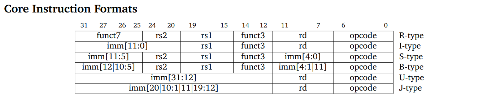
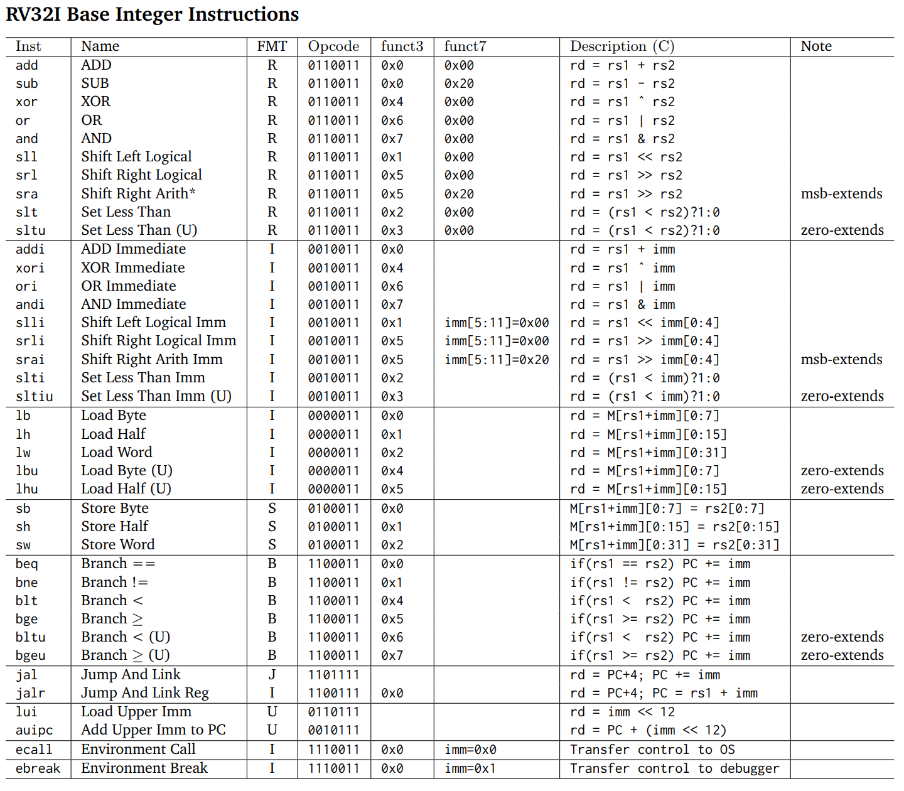

chapter2
一些基础内容：
- 下面设计的内容源于
RISC-V的RV32I指令集 - 内存的基础单位为
byte，即 8bit - 1 word = 4 byte
寄存器
每个寄存器都是 32 位的
| Register name | Symbolic name | Description | Saved by |
|---|---|---|---|
| x0 | zero | Always zero | |
| x1 | ra | Return address | Caller |
| x2 | sp | Stack pointer | Callee |
| x3 | gp | Global pointer | |
| x4 | tp | Thread pointer | |
| x5 | t0 | Temporary / alternate return address | Caller |
| x6–7 | t1–2 | Temporaries | Caller |
| x8 | s0/fp | Saved register / frame pointer | Callee |
| x9 | s1 | Saved register | Callee |
| x10–11 | a0–1 | Function arguments / return values | Caller |
| x12–17 | a2–7 | Function arguments | Caller |
| x18–27 | s2–11 | Saved registers | Callee |
| x28–31 | t3–6 | Temporaries | Caller |
Caller-saved / Callee-saved
简单来说，Caller-saved不保证调用者在经历一些不同进程后（比如进行函数调用）寄存器值相同，需要调用者自己在一些地方保存（内存、栈...）。而Callee-saved由程序保证，只要环境相同，前后调用值不会改变（系统会自动在切换进程时保存）。
为什么要有这么麻烦的设计，问了一下 gpt，给了如下回答：
在函数调用和返回的上下文中，区分 caller-saved（调用者保存）和 callee-saved（被调用者保存）寄存器是为了管理函数调用过程中寄存器的使用和保存，确保程序的正确性和寄存器的有效利用。这种区分主要基于以下几个原因：
-
保持函数的可重入性（Reentrancy）：
- Caller-saved：调用者在调用函数之前需要保存这些寄存器的值，并在函数返回后恢复它们。这样做是为了保证函数的可重入性，即同一个函数可以被多次调用，而不会相互干扰。
- Callee-saved：被调用者负责在函数开始时保存这些寄存器的值，并在函数返回前恢复它们。这允许函数在执行过程中使用这些寄存器，而不必担心破坏调用者的上下文。
-
优化寄存器使用：
- 通过区分 caller-saved 和 callee-saved 寄存器，编译器可以更有效地分配寄存器资源。调用者保存的寄存器可以在函数调用之间保持不变，而不需要在每次调用时都保存和恢复。
-
减少保存和恢复的开销：
- 并不是所有的寄存器都需要在每次函数调用时都保存和恢复。通过区分 caller-saved 和 callee-saved 寄存器，可以减少不必要的保存和恢复操作，从而提高程序的执行效率。
-
简化编译器的寄存器分配策略：
- 编译器在生成代码时，需要决定哪些寄存器用于局部变量，哪些用于函数参数，以及哪些用于返回值。通过区分 caller-saved 和 callee-saved 寄存器，编译器可以更容易地制定寄存器分配策略。
-
支持异常处理和信号处理：
- 在异常处理和信号处理中，需要快速保存和恢复寄存器状态。通过区分 caller-saved 和 callee-saved 寄存器，可以更快地实现这一过程。
-
支持多线程环境：
- 在多线程环境中，线程可能会被中断并切换到其他线程。通过区分 caller-saved 和 callee-saved 寄存器，可以确保线程的上下文在切换时得到正确的保存和恢复。
x0 寄存器
x0 寄存器是一个特殊的寄存器，它被硬编码为 0，也就是说，任何时候读取 x0 寄存器的值都会得到 0，同时，任何写入 x0 寄存器的操作都会被丢弃，不会影响其值。这个特性使得 x0 寄存器在编程和指令集设计中非常有用，因为它提供了一个常量 0 的来源，并且可以作为一个“丢弃”操作的结果的目标寄存器。
由于 x0 寄存器的这一特性，它经常被用于简化指令集和编译器优化。例如，RISC-V 没有单独的nop（无操作）指令，而是可以通过写入 x0 寄存器来实现，如addi x0, x0, 0，这条指令实际上不会对程序状态产生任何影响，因为它写入了一个会被丢弃的寄存器。
此外，x0 寄存器也用于实现其他一些操作，比如取负数指令可以通过sub rd, x0, rs来实现，这里x0 - rs等价于0 - rs，也就是-rs。同样，跳转指令也可以通过写入 x0 寄存器来实现，因为写入 x0 的任何值都会被丢弃，所以不会影响程序的状态。
总的来说，x0 寄存器的设计是为了提高指令集的效率和简化编译器的工作，它不能被改变值，总是恒定为 0，写入操作会被忽略。
指令集

参数解释
opcode: 操作码func3/func7: 操作码的拓展位rd: register destination，即目标寄存器rs1/rs2: register source, 即源寄存器imm: 立即数，也就是一般的常数
类型解释
| 目的 | 类型 |
|---|---|
| 用于寄存器-寄存器操作 | R 类型指令 |
| 用于短立即数和访存 load 操作 | I 型指令 |
| 用于访存 store 操作 | S 型指令 |
| 用于条件跳转操作 | B 类型指令 |
| 用于长立即数 | U 型指令 |
| 用于无条件跳转 | J 型指令 |
一些常用指令
